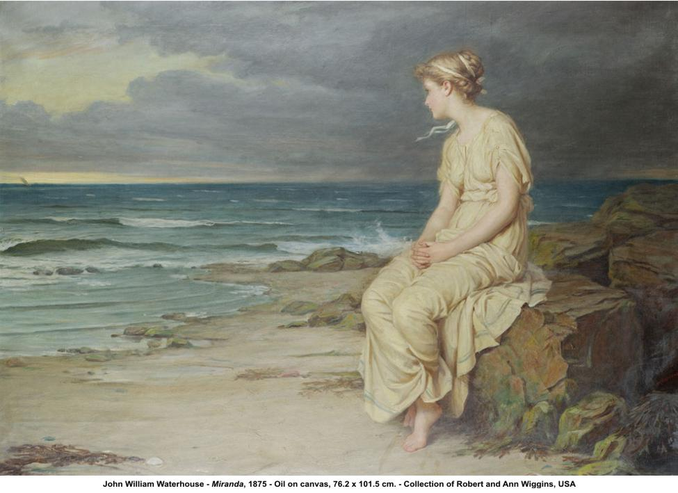

Do you remember an Inn,Miranda?
Do you remember an Inn?
And the tedding and the spreading
Of the straw for a bedding,
And the fleas that tease in the High Pyrenees,
And the wine that tasted of tar?
And the cheers and the jeers of the young muleteers
(Under the vine of the dark verandah)?
Do you remember an Inn, Miranda,
Do you remember an Inn?
And the cheers and the jeers of the young muleteeers
Who hadn't got a penny,
And who weren't paying any,
And the hammer at the doors and the Din?
And the Hip! Hop! Hap!
Of the clap
Of the hands to the twirl and the swirl
Of the girl gone chancing,
Glancing,
Dancing,
Backing and advancing,
Snapping of a clapper to the spin
Out and in --
And the Ting, Tong, Tang, of the Guitar.
Do you remember an Inn,
Miranda?
Do you remember an Inn?
Never more;
Miranda,
Never more.
Only the high peaks hoar:
And Aragon a torrent at the door.
No sound
In the walls of the Halls where falls
The tread
Of the feet of the dead to the ground
No sound:
But the boom
Of the far Waterfall like Doom.
The Miranda of Hilaire Belloc's "Tarantella" is Miranda Mackintosh whom Belloc met at an inn in the Pyrenean hamlet of Canranc on the River Aragon in 1909. The poem, written twenty years later, was a New Year's present to the Scottish Miranda. The holograph copy is inscribed: "For Miranda: New Year's 1929."
The tarantella is a dance (for two) that is supposed to be brought on by the intoxication induced by the sting of the tarantula, which is similar to that induced by falling in love.